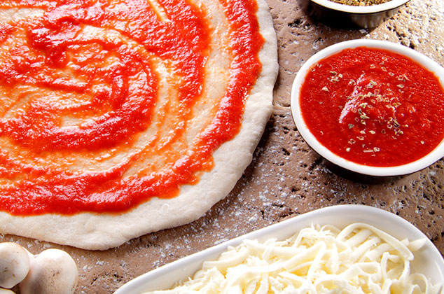
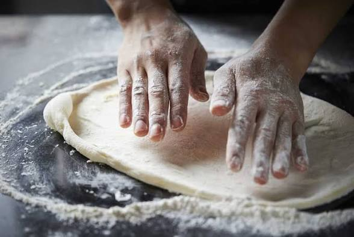
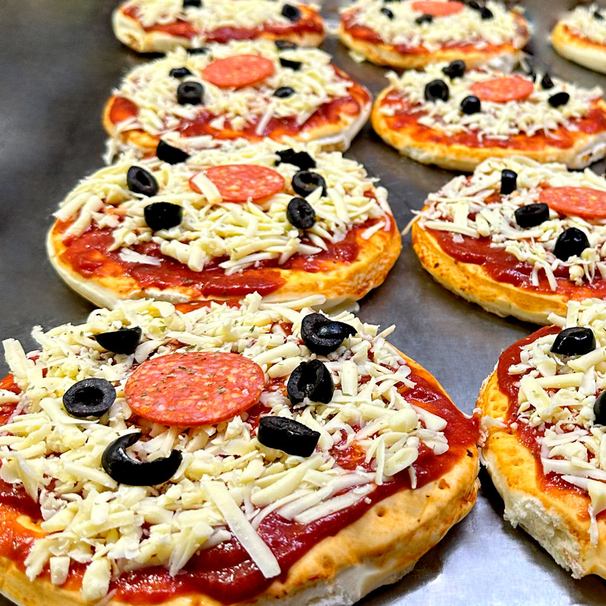

Licuar los tomates, el agua, las hojas de albahaca, los dientes de ajo, el orégano y la pasta de tomate. Calentar una olla a fuego medio. Agregar el aceite, la salsa licuada y el azúcar. Cocinar por 5 minutos. Sazonar con sal y pimienta al gusto. Dejar enfriar y reserva

Amasar todos los ingredientes de la masa hasta obtener una mezcla homogénea. Dividir la masa en 4 porciones y dejarla reposar en un plástico por lo menos media hora a temperatura ambiente. Enharinar la mesa con Doñarepa para darle forma con el rodillo a la masa. Precalentar el horno a 400 ºF (200ºC)

Seguir los siguientes pasos: Formar 4 discos de masa de 20 cms de diámetro y 1 cm de grosor. Pinchar la masa con un tenedor. Precocer los discos de pizza por 8 minutos. Adicionar la salsa, el queso mozzarella, el jamón y las mazorquitas. Devolver al horno hasta que el queso gratine. Retirar, rociar con orégano y servir bien caliente.
